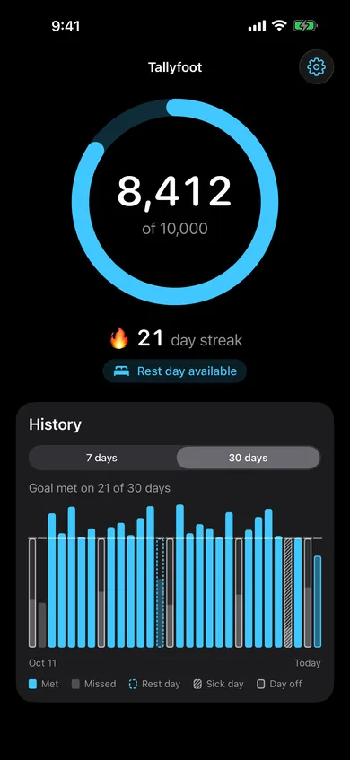

Your daily step goal, right on your Apple Watch face.
Tallyfoot's ring fills as you walk, with your step count in the center. It's free, with no accounts, ads, tracking or in-app purchases, and it works on iPhone alone too.

A complication for your watch face
Add Tallyfoot as a complication to a compatible face, such as Modular Duo or X-Large. Tinted faces draw the ring in the system tint.
The Tallyfoot watch app shows your ring too. Turn on notifications to get one tap on your wrist when you reach your goal.


Streaks with room for rest
Six goal days in a row earn you a rest day. You can hold one at a time, and it protects your streak from a missed day.
Mark a sick day on any of the last 7 days in your history, or set weekly days off in Settings. Neither breaks your streak.


History against each day's goal
See the last 7 days on Apple Watch, and 7 or 30 days on iPhone. Each day is measured against that day's goal.


Home Screen and Lock Screen widgets
Put your ring on your iPhone Home Screen or Lock Screen. Set your daily goal and app ring color in the iPhone app. Lock Screen widgets use the system tint.
Your steps stay on your devices
Tallyfoot reads steps from Apple Health and your devices' motion sensors. It syncs between your own iPhone and Apple Watch and sends no data to the developer.
Details are in the Privacy Policy. For help, see Support.